Overview
In this project, I explored the mechanics of diffusion models using DeepFloyd IF. I implemented the sampling loops from scratch. This includes implementing sampling loops, the forward process, and iterative denoising to generate images. Then, we used inpainting and semantic editiing.
Part 0: Setup
In part 0, I set up the DeepFloyd IF model, a pixel-based diffusion model. Since the model operates with text embeddings instead of raw strings, we pre-computed embeddings for a few prompts. Below are some example images generated to ensure the model was functioning correctly.
Random Seed Used: 100
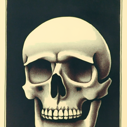
"a lithograph of a skull" (Steps: 20)
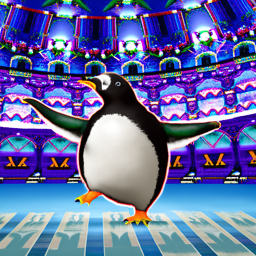
"a penguin dancing in the Shakespeare Globe" (Steps: 20)
"Berkeley Oski defeating the stanford tree" (Steps: 50)
Part 1: Sampling Loops
1.1 Implementing the Forward Process
The forward process is defined by progressively destroying the structure of an image by adding Gaussian noise. I implemented this by scaling the clean image and the noise according to the schedule $\sqrt{\bar{\alpha}_t}$ and $\sqrt{1 - \bar{\alpha}_t}$. As $t$ increases from 0 to 1000, the image approaches pure noise.
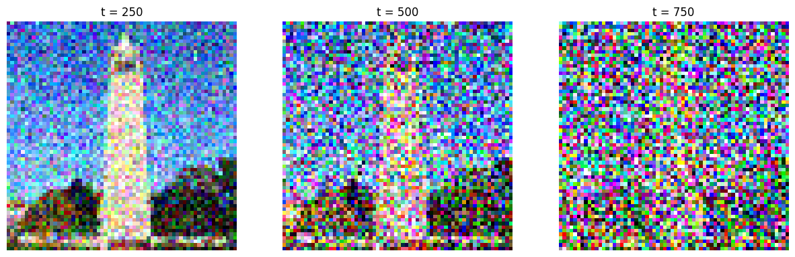
1.2 Classical Denoising
This part illustrates the failure of our classical denoising method, the Gaussian Blur. The granular noise reduces, but the detailed structure of the image remains obscured in noise.
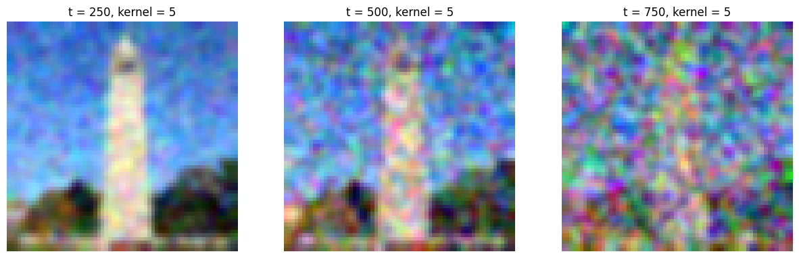
1.3 One-Step Denoising
Instead, I used the pre-trained DeepFloyd U-Net to predict the noise $\epsilon$ in the image and subtract it in a single step. The result is significantly better than Gaussian Blur, though there is still some blurriness.
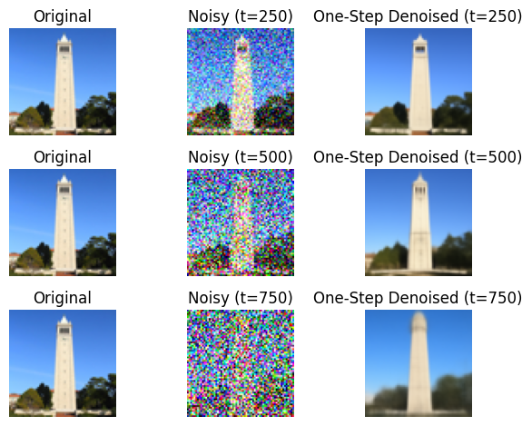
1.4 Iterative Denoising
To get a high-quality result, I implemented the full iterative denoising loop using strided timesteps. We iterate from $t=990$ to $t=0$ with a stride of 30, removing a fraction of the noise and adding a bit of variance back at each step to keep the process stable. Gradual steps allow the model to discover more details and guide to the manifold easier.

t=90
Comparison of Methods

Original

One-Step Denoise
1.5 Diffusion Model Sampling
Now that the loop works, I generated new images from pure Gaussian noise. The prompt "a high quality photo" was used.
1.6 Classifier-Free Guidance (CFG)
To fix the quality issues from part 1.5, I implemented Classifier-Free Guidance (CFG). At each step, we compute two estimates. One noise conditioned on the text prompt ($\epsilon_c$) and one unconditioned ($\epsilon_u$). The difference ($\epsilon_c - \epsilon_u$) of these noises and scaling it by $\gamma > 1$ pushes the generated image more strongly towards the prompt and away from the generic mean. The resulting images are much sharper.

CFG Sample 3
Part 1.7: Image-to-Image Translation
In this part we combine the forward and reverse processes, which effectively can edit images. We take our real image and after adding noise, let the diffusion model hallucinate new details as it returns to the manifold (SDEdit).
Campanile Edits
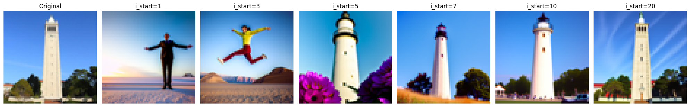
Custom Image 1 (Doge)
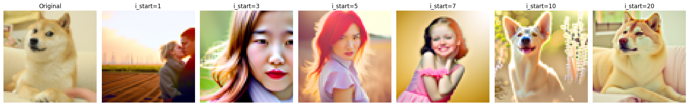
Custom Image 2 (Forest)
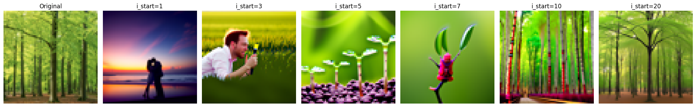
1.7.1 Editing Hand-Drawn and Web Images
We also used this to project non-realistic inputs (in this case sketches and a cartoon image) onto the natural image manifold. I took a few inputs and used SDEdit to turn them into more realistic versions.
Web Image
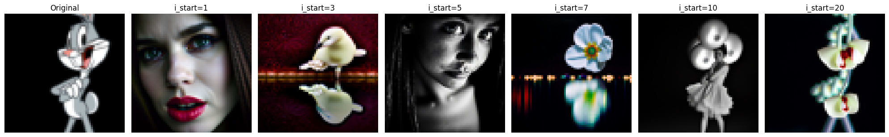
Hand Drawn 1
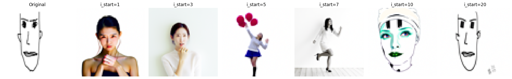
Hand Drawn 2
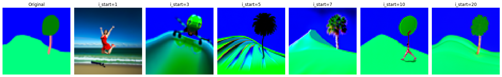
1.7.2 Inpainting
We can also use the diffusion loop to inpaint images. At every step, we ensure this by replacing the pixels outside of a mask with the original image. This forces the model to only generate content inside the masked region, causing it to blend with the original image region.
Campanile
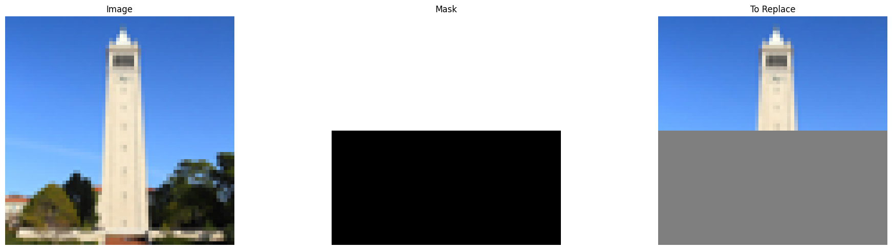
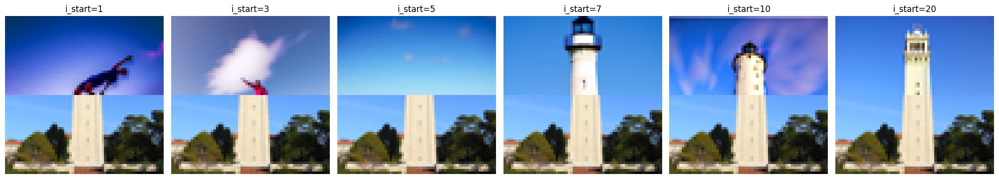
Custom Image 1 (Door)
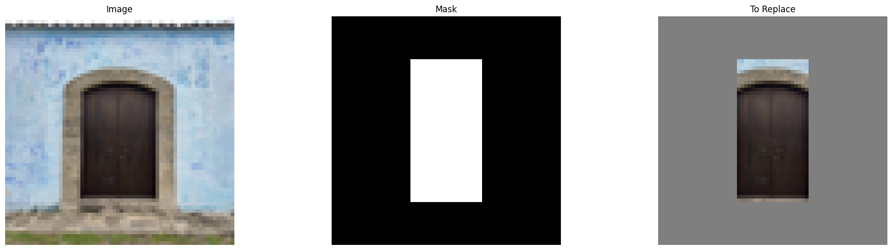
Custom Image 2 (London)
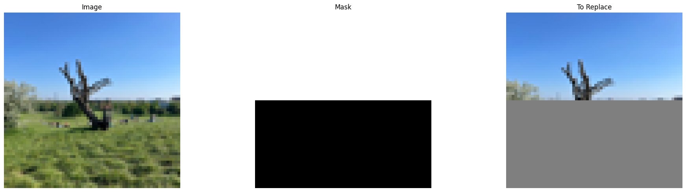
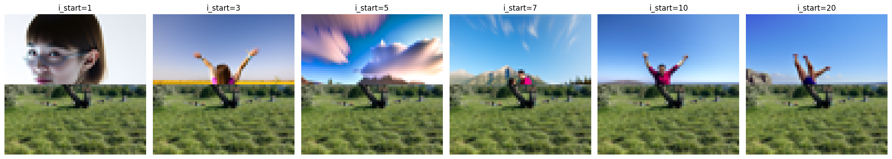
1.7.3 Text-Conditional Image-to-Image Translation
Instead of using the null bound prompt of "a high quality photo" for SDEdit, we use specific text prompts (in this case "a photo of the Amalfi Coast") into the denoising loop. This guides the projection to take on the semantic characteristics of the new prompt.
Campanile:
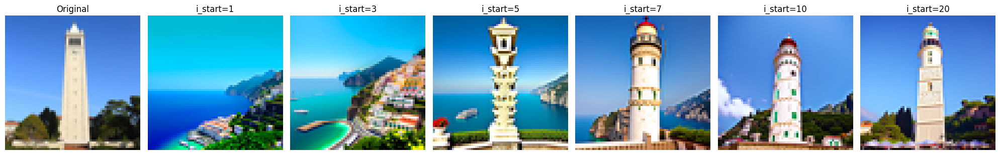
Door:
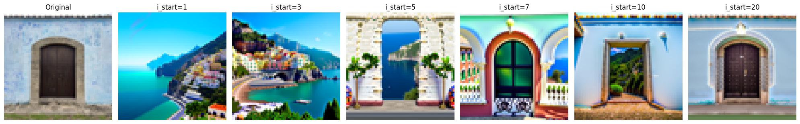
London:
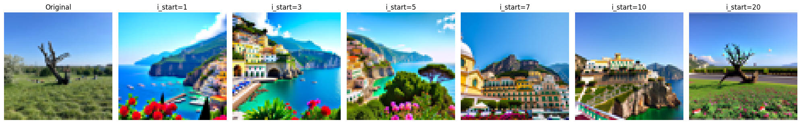
Part 1.8: Visual Anagrams
To create anagrams, we manipulated the noise estimate directly. The algorithm works by denoising an image with Prompt A, then flipping the image and denoising it with Prompt B. By averaging these two noise estimates and taking a step, it forces the image to satisfy both prompts simultaneously.
"People around a campfire"
Part 1.9: Hybrid Images
Similar to the visual anagrams, hybrid images also work by combining noise estimates. I computed the noise for Prompt A and Prompt B. Then, I combined the low frequency components of Prompt A's noise with the high frequency components of Prompt B's noise. The resulting image looks like Prompt A from a distance (low frequency) and Prompt B when viewed up close (high frequency).
Hybrid 1 (a man in a hat / a dog)
Hybrid 2 (a rocket ship / a pencil)
Part B: Flow Matching from Scratch!
In the second part of the project, I implemented and trained diffusion models on the MNIST dataset.
The unconditioned denoiser architecture is as such.
Part 1: Training a Single-Step Denoising UNet
We optimize a denoiser $D_\theta$ that maps a noisy image back to a clean image. The training objective is an L2 loss: $L = \| D_\theta(z) - x \|^2$.
1.2 Visualization of the Noising Process
Below is the visualization of the noising process with $\sigma$ from 0.0 to 1.0. As $\sigma$ increases, the image becomes more noisy.
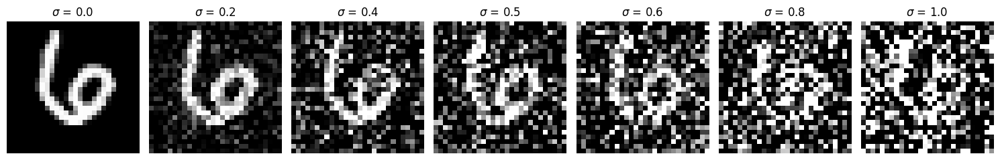
Noising process over $\sigma = [0.0, 0.2, 0.4, 0.5, 0.6, 0.8, 1.0]$
1.2.1 Training the Denoiser
The model was trained for 5 epochs with a batch size of 256 and a hidden dimension of 128.
1.2.2 Out-of-Distribution Testing
The denoiser was trained with $\sigma=0.5$. Here we test it on noise levels it wasn't trained for.Performance degrades at high noise levels.
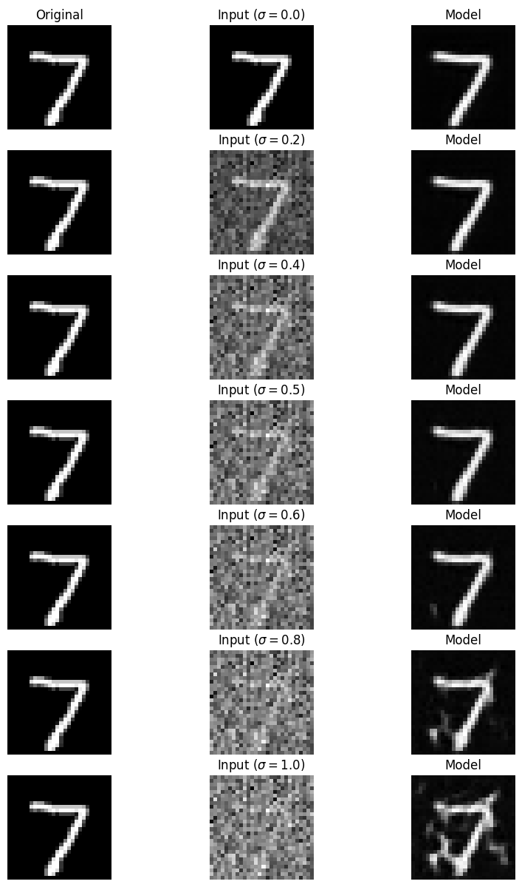
Denoising results with varying $\sigma$ (Out-of-Distribution)
1.2.3 Denoising Pure Noise
In this part we train the denoiser to map pure Gaussian noise directly to clean images.
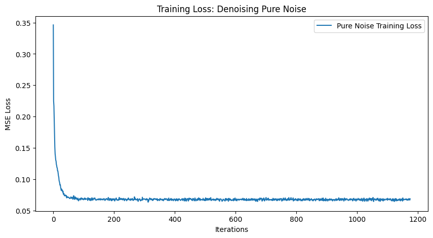
Training Loss (Pure Noise)
The generated outputs look like a blurry average of all digits. I personally see the 3 most clearly. The model learns to predict the mean of the conditional distribution with MSE, so when input is pure noise the best prediction is just to take the centroid of the training set.
Part 2: Training a Flow Matching Model
Instead of single-step denoising, we train the UNet to predict the flow that transforms a noise distribution into the data distribution over time from 0 to 1.
2.2 Time-Conditioned UNet Training

Training Loss Curve (Time-Conditioned Flow Matching)
2.3 Sampling from the Time-Conditioned UNet
These samples are generated with Euler integration for models trained for 1, 5, and 10 epochs.
2.5 Class-Conditioned UNet Training
Conditioning on the class labels (0-9) and using Classifier-Free Guidance improves the model.
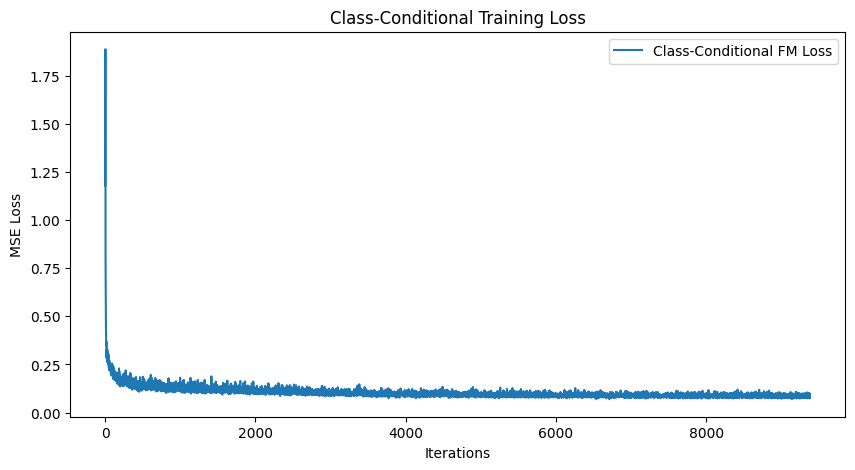
Training Loss Curve (Class-Conditioned)
2.6 Sampling with Classifier-Free Guidance
Samples generated with guidance $\gamma = 5.0$.
Scheduler Removal
The problem asks if we can get rid of the rate scheduler which lowers the training rate over time. We can remove the scheduler as long as we lower the initial learning rate to a constant value of 1e-3. The original scheduler decayed from 1e-2 down to about 1e-3. Training at this value allowed the model to train stably without diverging.
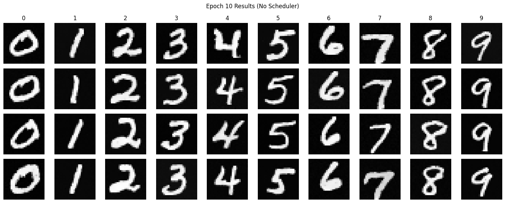
No Scheduler - epoch 10